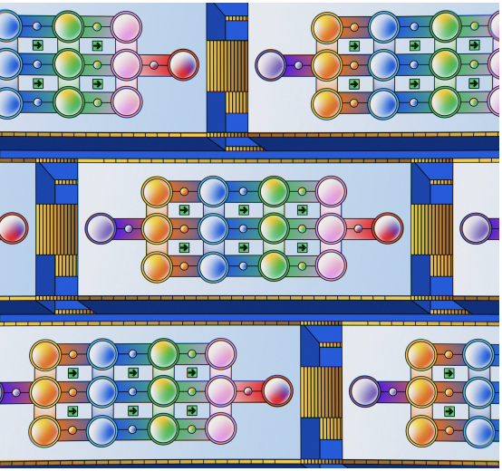

Model in the Mirror was a research project I completed with the Center for Language and Technology at UH Manoa under a Undergraduate Research Opportunity Program (UROP) grant. The purpose was to develop a script that creates “C-tests,” which are language learning passages that the Center will use for an app that they are developing. I had an advisor to assist me with project direction, but all code was written by me.

The script does the following:
In the process of developing this script, I developed a wide range of useful skills. I learned about the intricacies of type conversion, string manipulation, managing Python libraries, github file management, language processing, and more that would turn this sentence into a massive run-on. I also learned a lot about linguistics and the way by which spaCy processes and analyzes the text. The experience I gained by developing a project like this was invaluable and I can’t wait to continue working on it over the course of this semester.
This is a link to the repository where all files are stored. The current main prompt generator is stored in the “generators” folder under newgenerator.py. There is also a file called pipeline.py that generates a C-test from a random passage within a database. spacyfunctions.py is where the actual C-test conversion takes place. The last main file to highlight is doc_thoughts.ipnyb, which is a Jupyter notebook documenting the production of the project. Additionally, this is a sample website that was used for language experts to test the C-tests.